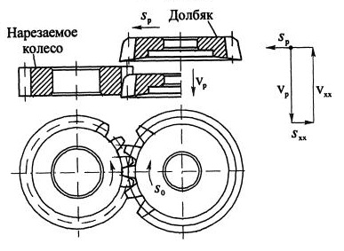
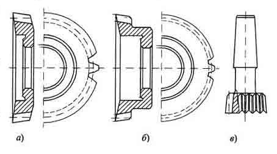

Долбяк представляет собой режущий инструмент, выполненный в виде зубчатого колеса, у которого вершины и боковые стороны зубьев снабжены передними и задними углами.
Долбяки предназначены для нарезания зубьев цилиндрических прямозубых, косозубых и шевронных колес, а также колес внутреннего зацепления. Долбяки незаменимы при нарезании зубьев в упор, например на блочных колесах или колесах с фланцами. Они обеспечивают большую производительность при нарезании колес с узким буртом и большим числом зубьев, при нарезании зубчатых секторов и реек. Следует отметить их высокую технологичность, возможность достижения высокой точности при изготовлении и широкую универсальность в применении.
Изготавливают долбяки из быстрорежущей стали и очень редко снабжают твердосплавными пластинами.
Долбяк крепится на штосселе специального зубодолбежного станка и работает по методу обкаточного огибания. Движение резания vp (главное движение) долбяк осуществляет при перемещении вниз вдоль оси, затем следует холостое движение вверх и поворот долбяка относительно заготовки, т.е. происходит обкат инструмента и заготовки по начальным окружностям без скольжения. Перед холостым ходом вверх ( v xx ) долбяк отводится на небольшое расстояние S хх от заготовки во избежание трения задней поверхности об обработанную поверхность. Таким образом, долбяк осуществляет возвратно-поступательные движения и вращательное относительно своей оси.
Подача (круговая), определяющая толщину слоя, срезаемого боковыми режущими кромками, осуществляется при относительном вращении долбяка и заготовки и измеряется по делительной окружности - S 0 [ мм / дв.ход ]. Кроме того, долбяк получает радиальную подачу при врезании в заготовку S p [ мм / дв.ход ].
Профиль зубьев нарезаемого колеса образуется как огибающая различных положений режущих кромок долбяка относительно заготовки.
Из-за прерывистости процесса резания и невозможности развивать высокие скорости резания вследствие больших сил инерции долбяк по производительности уступает червячным фрезам.
В машиностроении применяются следующие типы конструкций долбяков: дисковые, чашечные (втулочные) и хвостовые. Их различие заключается в том, что у чашечных долбяков, работающих в упор, элементы крепления размещаются в специальной выемке или во втулке во избежание контакта с упором. Хвостовые долбяки имеют малый диаметр и применяются при нарезании колес внутреннего зацепления и мелкомодульных колес ( m < 1 мм ). Для нарезания косозубых и шевронных колес применяют косозубые долбяки.
Стандартные долбяки (ГОСТ 9323-79) изготавливаются трех классов точности АА, А и В для нарезания колес соответственно 6, 7 и 8-й степеней точности.
К числу недостатков долбяков следует отнести: сложность кинематики зубодолбежных станков, ограничения применяемости по числу зубьев нарезаемых колес из-за вносимых погрешностей в их профиль.
Наружный диаметр долбяков ограничивается опасностью их перекоса при консольном креплении на станке.